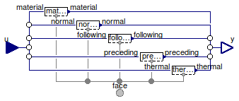

Table of Contents
- User's Guide
- Blocks
- Conditions
- Assemblies
- Regions
- Subregions
- Connectors
- Characteristics
- Units
- Quantities
- BaseClasses
Download
- Latest version (**Empty; please check back soon or contact kdavies4 at gmail.com.)

| Name | Description |
|---|---|
| Face | Conditions for a Face connector |
| FaceIsolated | |
| Material conditions | |
| Translational conditions | |
| Thermal conditions | |
| Base classes (generally not for direct use) |

| Type | Name | Default | Description |
|---|---|---|---|
| Conditions | |||
| Density | material | redeclare Material.Density m… | Material |
| Velocity | normal | redeclare Translational.Velo… | Normal translational |
| Velocity | following | redeclare Translational.Velo… | 1st transverse |
| Velocity | preceding | redeclare Translational.Velo… | 2nd transverse |
| Temperature | thermal | redeclare Thermal.Temperatur… | Thermal |
| Type | Name | Description |
|---|---|---|
| Face | face | Single-species connector for material, momentum, and energy |
| RealInputBus | u | Input bus for values of specified conditions |
| RealOutputBus | y | Output bus of measurements |
model Face "Conditions for a Face connector" extends FCSys.BaseClasses.Icons.Conditions.Single; replaceable Material.Density material(source(y=4*U.C/U.cc)) constrainedby Conditions.ByConnector.Face.Single.Material.BaseClasses.PartialCondition "Material"; replaceable Translational.Velocity normal(final orientation) constrainedby Conditions.ByConnector.Face.Single.Translational.BaseClasses.PartialCondition( orientation=Orientation.normal) "Normal translational"; replaceable Translational.Velocity following(final orientation) constrainedby Conditions.ByConnector.Face.Single.Translational.BaseClasses.PartialCondition( orientation=Orientation.following) "1st transverse"; replaceable Translational.Velocity preceding(final orientation) constrainedby Conditions.ByConnector.Face.Single.Translational.BaseClasses.PartialCondition( orientation=Orientation.preceding) "2nd transverse"; replaceable Thermal.Temperature thermal(source(y=298.15*U.K)) constrainedby Conditions.ByConnector.Face.Single.Thermal.BaseClasses.PartialCondition "Thermal"; // Note: In Dymola 7.4, the value of y must be specified here instead // of at the lower level (e.g., Thermal.Temperature) so that the source // subcomponent can be replaced by blocks that don't contain the // parameter y. Connectors.Face face "Single-species connector for material, momentum, and energy"; Connectors.RealInputBus u "Input bus for values of specified conditions"; Connectors.RealOutputBus y "Output bus of measurements"; equation // Material connect(material.face, face); connect(u.material, material.u); connect(material.y, y.material); // Normal translational connect(normal.face, face); connect(u.normal, normal.u); connect(normal.y, y.normal); // 1st transverse connect(following.face, face); connect(u.following, following.u); connect(following.y, y.following); // 2nd transverse connect(preceding.face, face); connect(u.preceding, preceding.u); connect(preceding.y, y.preceding); // Thermal connect(thermal.face, face); connect(u.thermal, thermal.u); connect(thermal.y, y.thermal); end Face;
| Type | Name | Default | Description |
|---|---|---|---|
| Conditions | |||
| Velocity | normal | redeclare Translational.Velo… | Normal translational |
| Type | Name | Description |
|---|---|---|
| Face | face | Single-species connector for material, momentum, and energy |
| RealInputBus | u | Input bus for values of specified conditions |
| RealOutputBus | y | Output bus of measurements |
model FaceIsolated extends Face( redeclare replaceable Conditions.ByConnector.Face.Single.Material.Current material, redeclare replaceable Conditions.ByConnector.Face.Single.Translational.Force following(final orientation), redeclare replaceable Conditions.ByConnector.Face.Single.Translational.Force preceding(final orientation), redeclare replaceable Conditions.ByConnector.Face.Single.Thermal.HeatRate thermal); // See note in ChemicalNetNoFlow. end FaceIsolated;